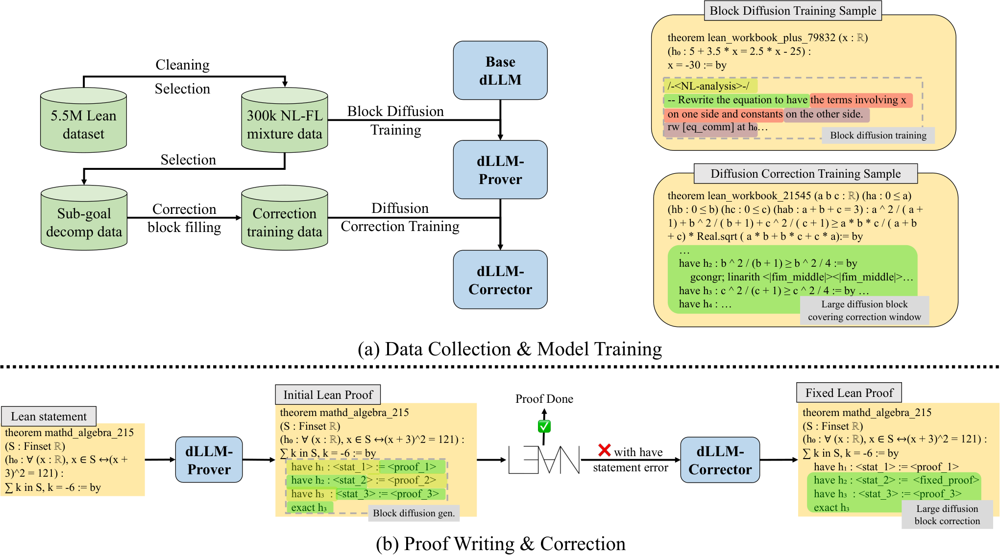
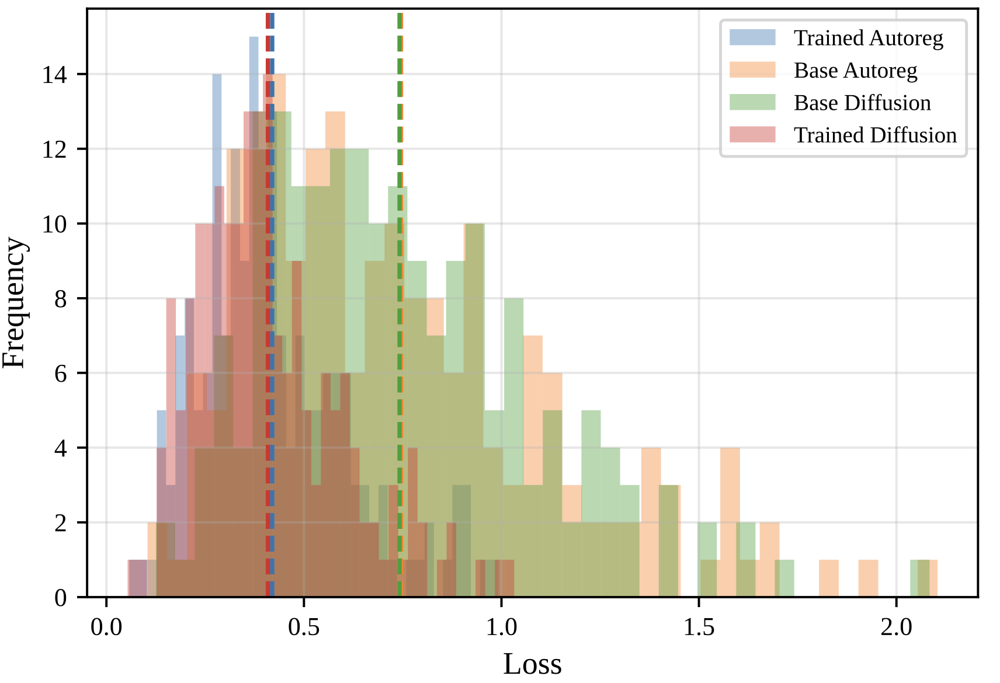

Trains diffusion LLMs on Lean4 proof data to generate and in-fill-correct whole Lean4 proofs, verified by Lean on MiniF2F and ProofNet.
Abstract
Enhancing the formal math reasoning capabilities of Large Language Models (LLMs) has become a key focus in both mathematical and computer science communities in recent years. While significant progress has been made in using state-of-the-art Auto-Regressive (AR) LLMs for formal theorem proving, these models suffer from inherent limitations. Their next-token prediction generation methods may yield suboptimal performance due to the challenges of long-range coherence and the compounding of errors over long sequences. Recent advancements in diffusion LLMs (dLLMs), which generate text through iterative denoising of a multi-token block, offer a promising alternative. However, the application of dLLMs to formal mathematics, where maintaining long-range coherence is critical, remains largely understudied. To address the challenges above, we propose **Diffusion-Proof**, to the best of our knowledge, the first framework to train and apply dLLMs for formal theorem proving. Our frameworks contain training and inference methods for two models. The first one is *dLLM-Prover-7B*, which performs whole-proof writing with long-range coherent tactic usage. The second one is *dLLM-Corrector-7B*, which is a novel large block diffusion-based correction model. It leverages the in-filling capabilities of dLLMs to perform local proof correction using bi-directional information. Extensive experiments demonstrate that **Diffusion-Proof** relatively significantly outperforms the AR LLM baseline trained under the same dataset. **Diffusion-Proof** achieves an absolute improvement of **1.61%** on ProofNet-Test and **6.14%** on MiniF2F-Test benchmarks compare to the baseline. Notably, **Diffusion-Proof** successfully resolves one IMO problem that more advanced thinking model DeepSeek-Prover-V2-7B could not solve, showcasing the unique advantage of dLLMs in formal theorem proving.
Problem
Auto-regressive LLM provers generate token by token, which makes long-range coherence hard and lets errors compound over long proofs. Diffusion LLMs, which denoise multi-token blocks, had not been explored for formal theorem proving.
Approach
Diffusion-Proof fine-tunes Fast-dLLM-V2-7B on 300k mixed natural-language/Lean4 examples, cleaned from a 5.5M Lean SFT corpus, to obtain dLLM-Prover-7B, which writes whole proofs with block diffusion. A second model, dLLM-Corrector-7B, is trained with large-block in-filling on subgoal-decomposed (have-based) proofs. When a proof fails Lean verification but its top-level subgoal skeleton is correct, the corrector rewrites the subgoal proofs using bi-directional context.

Figure 1: Diffusion-Proof framework: (a) Data Collection and Model Training: We first collect a 5.5M Lean SFT dataset from previous works, then perform cleaning and selection to obtain 300k natural language (NL)-formal language (FL) mixture data to fine-tune Fast-dLLM-V2-7B into dLLM-Prover-7B . Subsequently, we select data with subgoal decomposition and perform block filling to formulate data for
Results
At pass@32, Diffusion-Proof reaches 50.00% on MiniF2F-Test and 7.53% on ProofNet-Test. This is 6.14 and 1.61 points above an AR Qwen-2.5-Lean-SFT-7B baseline trained on the same data. It also solves one IMO problem that DeepSeek-Prover-V2-7B does not.

Figure 3: Validation loss for trained dLLM, trained AR LLM, base dLLM, and base AR LLM
Dataset
Qwen-2.5-Lean-SFT-7B
Diffusion-Proof
Improvement
ProofNet-Test
5.91%
7.53%
1.61%
MiniF2F-Test
43.85%
50.00%
6.14%
MiniF2F IMO
5.00%
15.00%
10.00%
MiniF2F Algebra
55.68%
67.05%
11.36%
Pass@32 versus the AR baseline trained on the same data